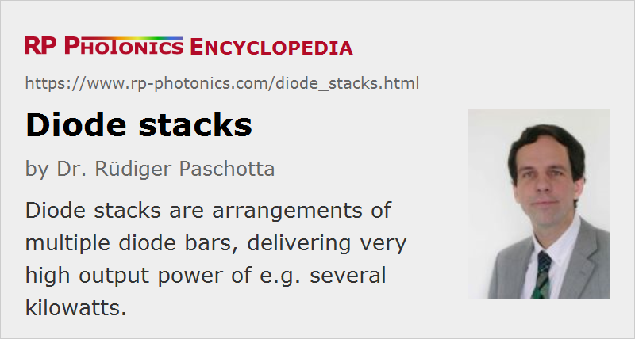

Diode Stacks
Definition: arrangements of multiple diode bars, delivering very high output power
Alternative term: diode laser stacks
More general term: diode lasers
German: Dioden-Stapel, Dioden-Stacks
Categories: optoelectronics, lasers
How to cite the article; suggest additional literature
Author: Dr. Rüdiger Paschotta
A diode stack (also called diode laser stack, multi-bar module, or two-dimensional laser array) contains a number of diode bars, which are arranged in the form of a stack. The most common arrangement is that of a vertical stack as shown in Figure 1. Effectively this is a two-dimensional array of edge emitters. Such a stack can be fabricated by cleaving linear diode laser arrays (diode bars) from a wafer, attaching them to thin heat sinks, and stacking these assemblies so as to obtain a periodic array of diode bars and heat sinks. There are also horizontal diode stacks (see below), and two-dimensional stacks.
For the highest beam quality, the diode bars should be as close to each other as possible. On the other hand, efficient cooling requires some minimum thickness of the heat sinks which need to be mounted between the bars. Due to that minimum spacing, the beam quality of the combined output of a diode stack in the vertical direction (and subsequently its brightness) is much lower than that of a single diode bar. There are, however, several techniques for significantly mitigating this problem, e.g. by spatial interleaving of the outputs of different diode stacks, by polarization coupling, or by wavelength multiplexing. Various types of high-power beam shapers and related devices have been developed for such purposes.
Depending on the application, a diode stack may be used with or without attached optics. A common option is the use of fast axis collimation lenses, which are directly attached to the bars (see Figure 2). Further optics can be used for collimation also in the slow axis (horizontal) direction, or even for coupling the output into a multimode fiber.
For more details on beam collimation, see the articles on laser diode collimators and beam collimators.
Diode stacks can provide extremely high output powers of hundreds or thousands of watts, as used for pumping of high-power solid-state lasers, or used directly e.g. for material processing. There are also fiber-coupled diode stacks, delivering e.g. several kilowatts from a multimode fiber with a core diameter of 600 μm. Some applications such as welding of metals or plastics, where a high beam quality is not required, can directly utilize the output of such a laser system, which can have a very high wall-plug efficiency. This is also attractive for other direct laser diode applications such as hardening, alloying, and cladding of metallic surfaces. If laser radiation with much higher brightness is required, the laser radiation may be used for pumping a high-power fiber laser based on a double-clad fiber. Such a device can serve as a brightness converter, delivering a somewhat reduced output power but with much higher beam quality.
There are also horizontal stacks, where the diode bars are arranged side-by-side, leading to a long linear array of emitters (see Figure 3). Such an arrangement is more easily cooled, and may thus also allow for a higher output power per emitter. The emission pattern of a horizontal stack is suitable for, e.g., pumping of rod lasers, whereas it is probably less convenient when an approximately circular output beam is required. The number of diode bars in a horizontal stack (and thus the total output power) is more limited than in a vertical stack.
The price of laser diode stacks has not dramatically changed over the years, while the output powers have been increased very substantially through the technological progress. Therefore, the price per watt of output power has been reduced substantially. At the same time, the device lifetimes have often been improved, so that the cost per watt-hour has been decreased even more dramatically. It also depends on various factors such as the emission wavelength, included cooling arrangements and the like.
Electric Supply and Cooling
Typically, all diode bars within one stack are electrically connected in series. If one has a stack containing 12 bars, each one emitting 100 W, the laser diode driver will typically have to provide a drive current around 100 A and a drive voltage of the order of 20 V. As a single diode bar would require the same high current, the electrical cables do not have to be stronger for a stack; only the voltage will be higher, but still quite moderate. The higher voltage allows the laser diode driver to reach a higher power conversion efficiency.
The cooling of such diode stacks is somewhat challenging, as a high dissipated power is produced within a small volume, and the means for cooling (e.g., microchannel coolers) should consume as little space as possible. The technical demands for cooling are highest for continuous-wave operation and much more moderate for quasi-continuous-wave operation with pulses of e.g. a few hundred microseconds duration and a pulse repetition rate of some tens of hertz. The latter mode of operation makes it possible to obtain very high peak powers, which can be used e.g. for pumping Q-switched high-power solid-state lasers.
Suppliers
The RP Photonics Buyer's Guide contains 18 suppliers for diode stacks. Among them:
Questions and Comments from Users
Here you can submit questions and comments. As far as they get accepted by the author, they will appear above this paragraph together with the author’s answer. The author will decide on acceptance based on certain criteria. Essentially, the issue must be of sufficiently broad interest.
Please do not enter personal data here; we would otherwise delete it soon. (See also our privacy declaration.) If you wish to receive personal feedback or consultancy from the author, please contact him e.g. via e-mail.
By submitting the information, you give your consent to the potential publication of your inputs on our website according to our rules. (If you later retract your consent, we will delete those inputs.) As your inputs are first reviewed by the author, they may be published with some delay.
See also: laser diodes, diode bars, fiber-coupled diode lasers, laser diode drivers, high-power lasers, brightness, wall-plug efficiency, laser cooling units
and other articles in the categories optoelectronics, lasers
|  |
If you like this page, please share the link with your friends and colleagues, e.g. via social media:
These sharing buttons are implemented in a privacy-friendly way!